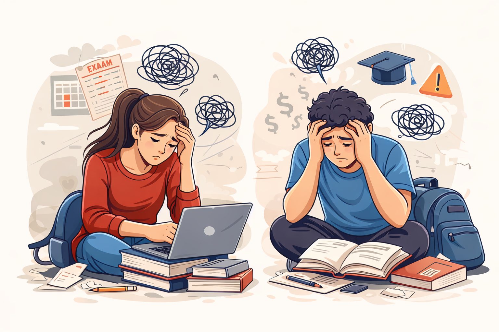

Table of Contents
- Anxiety and depression
- Financial stress
- Academic pressure
- Family pressure
- Time management
- Social pressure
- Relationships
- Career uncertainty
- Exam tension
- Travelling
- Sexual harassment
- Health issues
- hostel life
- Conclusion: Is College Worth It All?
1. Anxiety and Depression

Students must manage academics, social life, and future career decisions at the same time. Because of these pressures, many students experience Anxiety and Depression. These mental health challenges can affect concentration, motivation, and daily activities. Recognizing the symptoms early and seeking help can improve a student’s mental well-being. With the right coping strategies and support, students can overcome these difficulties and maintain a healthy academic life.
2. Financial stress
Students must manage academics, social life, and future career decisions at the same time. Because of these pressures, many students experience Anxiety and Depression. These mental health challenges can affect concentration, motivation, and daily activities. Recognizing the symptoms early and seeking help can improve a student’s mental well-being. With the right coping strategies and support, students can overcome these difficulties and maintain a healthy academic life.
1. Anxiety and Depression
Students must manage academics, social life, and future career decisions at the same time. Because of these pressures, many students experience Anxiety and Depression. These mental health challenges can affect concentration, motivation, and daily activities. Recognizing the symptoms early and seeking help can improve a student’s mental well-being. With the right coping strategies and support, students can overcome these difficulties and maintain a healthy academic life.
1. Anxiety and Depression
Students must manage academics, social life, and future career decisions at the same time. Because of these pressures, many students experience Anxiety and Depression. These mental health challenges can affect concentration, motivation, and daily activities. Recognizing the symptoms early and seeking help can improve a student’s mental well-being. With the right coping strategies and support, students can overcome these difficulties and maintain a healthy academic life.
1. Anxiety and Depression
Students must manage academics, social life, and future career decisions at the same time. Because of these pressures, many students experience Anxiety and Depression. These mental health challenges can affect concentration, motivation, and daily activities. Recognizing the symptoms early and seeking help can improve a student’s mental well-being. With the right coping strategies and support, students can overcome these difficulties and maintain a healthy academic life.
1. Anxiety and Depression
Students must manage academics, social life, and future career decisions at the same time. Because of these pressures, many students experience Anxiety and Depression. These mental health challenges can affect concentration, motivation, and daily activities. Recognizing the symptoms early and seeking help can improve a student’s mental well-being. With the right coping strategies and support, students can overcome these difficulties and maintain a healthy academic life.
Common Symptoms of Anxiety and Depression
Common Symptoms of Depression
- Constant sadness or feeling hopeless
- Loss of interest in activities once enjoyed
- Changes in sleep (too much or too little)
- Changes in appetite
- Difficulty concentrating on studies
- Feeling tired or lacking energy
Common Symptoms of Anxiety
- Excessive worry or fear
- Restlessness or feeling nervous
- Difficulty concentrating
- Sweating, dizziness, or shortness of breath
- Headaches or muscle tension
- Stomach problems
3. How Students Can Overcome It (Self-Help)
Students can manage stress and mental health through simple daily habits:
- Maintain a regular sleep schedule
- Exercise or do physical activities
- Practice meditation or deep breathing
- Manage time effectively for studies and personal life
- Take breaks and avoid overworking
- Talk openly about feelings with trusted friends or family
- Reduce excessive social media comparison
4. If Self-Help Is Not Enough (Seek Help From Others)
If symptoms continue or become severe, students should seek support from others:
- Talk to college counselors or psychologists
- Visit a doctor or mental health professional
- Join student support groups
- Seek guidance from teachers, mentors, or family members
- Participate in counseling or therapy sessions
Professional help can provide proper diagnosis, guidance, and treatment if needed.
5. Online Resources for Students
Students can access support and information through the following organizations:
- American College Health Association – Provides health resources and research for college students.
- Anxiety and Depression Association of America – Offers information about anxiety and depression, treatment options, and support.
- National Institute of Mental Health – Provides scientific information and mental health awareness resources.
- The Jed Foundation – Focuses on protecting emotional health and preventing suicide among college students.
- ULifeline – Online mental health resource platform designed specifically for college students.
These organizations provide educational materials, mental health tools, online screenings, and guidance to help students manage anxiety and depression.